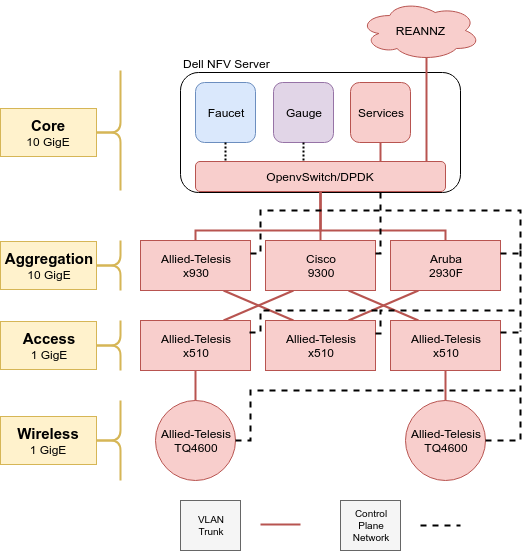

Redcables SDN Network @ WAND, Waikato University
Here you can find the monitoring data for our
Faucet
controlled OpenFlow network.
Grafana
Smokeping
The ansible playbooks used to create this network are public on
github
.
Our switch configurations are also available
for download
.
As well as our grafana dashboard templates are also available
for download
.
